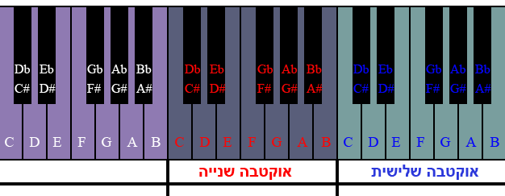

מאחורי הצלילים > מהי אוקטבה?
מקור השם "אוקטבה" הוא במספר שמונה, ואכן אוקטבה מציינת מרווח בין 8 טונים.
למשל, מ-דו אחד ל-דו הבא אחריו:
דו רה, מי, פה, סול, לה, סי, דו.
תמונה להמחשה בקלידים

בחרתי להמחיש מהי אוקטבה על הקלידים, מכיוון שבכלי זה החלוקה של התווים לאוקטבות הכי ברורה לעין.
שימו לב למבנה הקלידים בדגש על הקלידים השחורים. נוכל להבחין שהקלידים מחולקים לקבוצות של 2 שחורים ואז 3 שחורים וחוזר חלילה.
נסתכל על הקליד הראשון בתמונה(משמאל), הוא התו הראשון משמאל לקבוצת 2 השחורים. זהו התו דו(C).
אם נתקדם ממנו ימינה במעלה הקלידים(ונתעלם מהשחורים) נעבור על התווים רה(D), מי(E), פה(F), סול(G), לה(A), סי(B) ושוב דו(C).
זוהי ההגדרה של אוקטבה: מתו מסוים, עד לאותו התו בדיוק - רק בטון גבוה יותר.
בדוגמא הנ"ל, בחרתי להמחיש אוקטבה באמצעות התו דו, אך באותה מידה יכולנו להתחיל את האוקטבה שלנו מכל תו אחר(פה למשל) ולסיים אותה כשנגיע שוב לאותו תו בדיוק(פה) בטון גבוה יותר.
מספר התווים באוקטבה
אם כן, לאחר שהבנו מהי אוקטבה, נוכל לספור את מספר התווים הקיימים באוקטבה.
נתבונן בקלידים, אך כעת נתייחס גם לקלידים השחורים.
אם נספור את סך כל הקלידים באוקטבה מסוימת כולל הקלידים השחורים, נגיע למספר 12 - ראו תמונה.
אם כך, איך קיימים 12 תווים אם ישנם רק דו,רה,מי, פה,סול,לה,סי? אם קראתם את הפרק הקודם, הנכם כבר יודעים שבנוסף לשבעת התווים הבסיסים, קיימים עוד תווים במרווחים של חצי טון. אלה בדיוק הקלידים השחורים המופיעים בתמונה.
למשל, אם אני כעת נמצא על התו רה(D)
ומתקדם חצי טון למעלה(ימינה) אז לא אגיע ישר לתו מי(E) מכיוון שהתו E נמצא במרחק של טון שלם מהתו D.
אם כן, אם נתקדם בחצי טון למעלה מהתו רה(D), נגיע לקליד השחור שנמצא מימינו ונקרא #D(רה דיאז).
נוכל באותה מידה לראות שאם נהיה על התו מי(E) ונרצה לרדת בחצי טון למטה(שמאלה)
נגיע לתו Eb(מי במול)
שזהו בדיוק אותו התו כמו רה דיאז(#D) - ראה תרשים.
תעלומת הקלידים השחורים
נשים לב בתמונה, שבין התו מי(E) לתו פה(F)
לא קיים קליד שחור.
כיצד נסביר את התעלומה?
אם עברתם והפנמתם את הפרק הקודם, תוכלו להגיע למסקנה שבין התו מי לתו פה קיים מרווח של חצי טון בלבד. כנ"ל גם לגבי המרווח בין התו סי לתו דו.